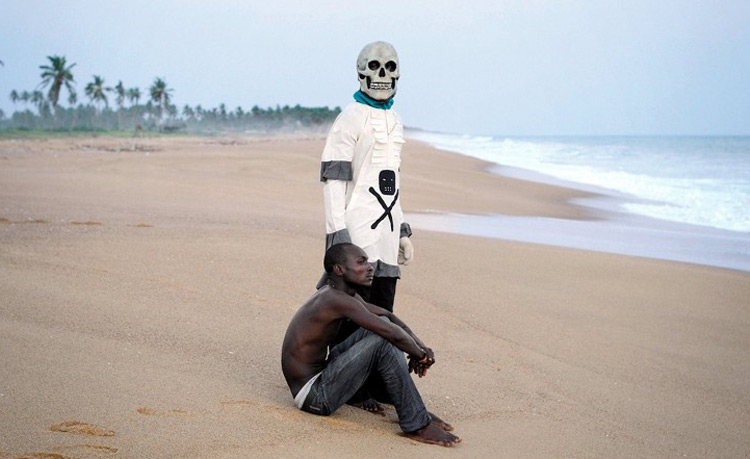
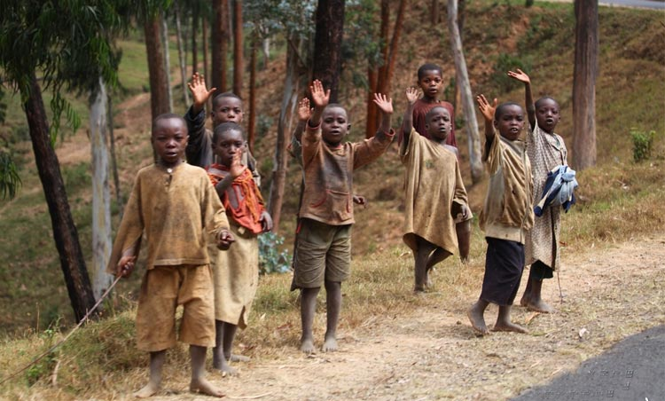
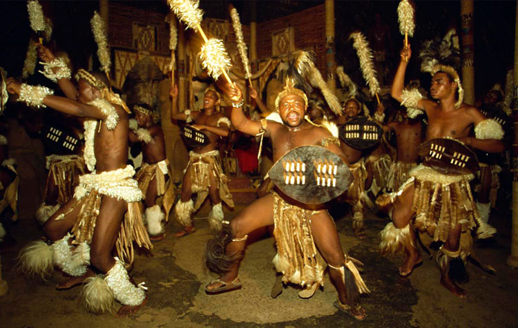

第二次世界大战结束后，我们经历了土地改革、三大改造等经济发展阶段，在一切刚刚走上正轨的时候，“高指标”、“浮夸风”、“共产风”等运动给经济的发展狠狠地踩了一脚刹车。就在这时，改革开放的春风吹了过来，经济再次以十倍、百倍于之前的速度发展了起来。在一定程度上，有了经济作后盾国际地位就有了保障。但是！如果没有支持者，那我们只能做一个形单影只的高冷土豪。在我们最需要的时候，第三世界国家敞开了怀抱，这其中当然少不了千千万万友好的非洲同胞。
历史上，非洲民族经历过非常多的苦难，最悲惨的就是无限度的COS商品——被当做奴隶四处贩卖，为市场经济的发展彻底的奉献了自己。
贩卖黑奴最初是从15世纪开始的，当时伊斯兰教徒的家庭没法赎回自己的亲属，于是就提出用数量更多的非洲黑人换回他们的亲属，从此黑人漫长的被贩卖生涯就开始了。
7世纪末，阿拉伯穆斯林进入北非后，一直把大量抓来的黑人（非穆斯林）贩运到阿拉伯国家以及波斯、印度和印度尼西亚等地。到14世纪时欧洲人也开始参与进来，当时已经有西班牙人贩卖从北非带来的黑奴，尔后葡萄牙人也开始了这项贸易。15世纪初，西班牙、葡萄牙一些大成市还有专门贩卖黑人的奴隶市场。15世纪中叶开始，非洲不断遭到欧洲殖民者的掠夺，奴隶买卖只是一项附带的贸易活动。15世纪末哥伦布发现美洲后奴隶贸易急剧发展起来，欧洲殖民者在非洲大陆上进行了有组织的大规模贩卖黑人活动，给非洲带来了深重的苦难。
散落各地的非裔人渴望团聚，为了团结世界各地同种族的人，他们每年12月26日到1月1日会庆祝宽扎节。在这七天里，非裔人聚在一起庆祝家庭、社区，庆祝联接他们民族的文化纽带。他们还会缅怀非洲传统，感激上苍赐予的美好生活。
宽扎节作为一种庆祝可以追溯到20世纪60年代的黑人民族主义运动，它通过深思和学习“非洲传统”、“共同的人道主义原则”，来帮助非裔美国人重新认识非洲文化和历史遗产。
源自非洲传统的收获节，以烛光仪式揭开序幕，每天点燃一支蜡烛。这象征非裔美国人的七个原则：团结、自决、共同生活、合作经济、目的、创造和信念。庆祝活动还包括互赠礼品、吃一顿名为“卡拉姆”的非洲餐。1月1日宽扎节的最后一天，是个人和集体进行反思的时候。人们问自己：“我是谁”、“我真的是自己宣称的那个我吗”和“我是我应该成为的那个人吗”烛台上的最后一支蜡烛被点燃，随后所有的蜡烛都被吹灭，标志着节日的结束。
1、每年12月26日到1月1日是非裔人的宽扎节，庆祝这个节日是为了团结世界各地的非裔人；
2、漫长的贩卖黑奴的历史给非洲人带来了深重的苦难，不论肤色、国籍，都应该是平等的。